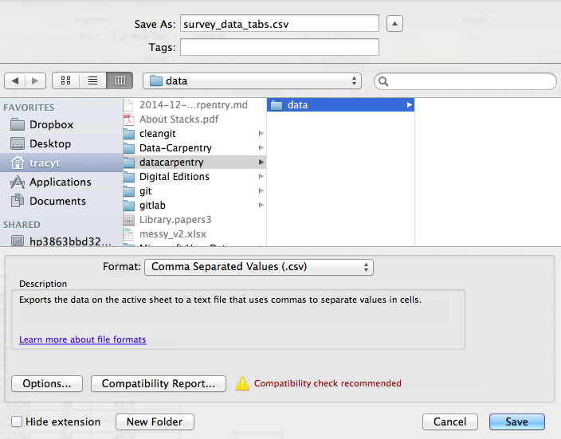

Exporting data
Data Organization in Spreadsheets for Ecologists
Overview
- Teaching: 10 min
- Exercises: 0 min
- Questions
- How can we export data from spreadsheets in a way that is useful for downstream applications?
- Objectives
- Store spreadsheet data in universal file formats.
- Export data from a spreadsheet to a CSV file.
Storing the data you’re going to work with for your analyses in Excel default file format (*.xls or *.xlsx - depending on the Excel version) isn’t a good idea. Why?
- Because it is a proprietary format, and it is possible that in the future, technology won’t exist (or will become sufficiently rare) to make it inconvenient, if not impossible, to open the file.
- Other spreadsheet software may not be able to open files saved in a proprietary Excel format.
- Different versions of Excel may handle data differently, leading to inconsistencies.
- The above points also apply to other formats such as open data formats used by LibreOffice / Open Office. These formats are not static and do not get parsed the same way by different software packages.
As an example of inconsistencies in data storage, do you remember how we talked about how Excel stores dates earlier? It turns out that there are multiple defaults for different versions of the software, and you can switch between them all. So, say you’re compiling Excel-stored data from multiple sources. There are dates in each file - Excel interprets them as their own internally consistent serial numbers. When you combine the data, Excel will take the serial number from the place you’re importing it from, and interpret it using the rule set for the version of Excel you’re using. Essentially, you could be adding errors to your data, and it wouldn’t necessarily be flagged by any data cleaning methods if your ranges overlap.
Storing data in a universal, open, and static format will help deal with this problem. Try tab-delimited (tab separated values or TSV) or comma-delimited (comma separated values or CSV). CSV files are plain text files where the columns are separated by commas, hence ‘comma separated values’ or CSV. The advantage of a CSV file over an Excel/SPSS/etc. file is that we can open and read a CSV file using just about any software, including plain text editors like TextEdit or NotePad. Data in a CSV file can also be easily imported into other formats and environments, such as SQLite and R. We’re not tied to a certain version of a certain expensive program when we work with CSV files, so it’s a good format to work with for maximum portability and endurance. Most spreadsheet programs can save to delimited text formats like CSV easily, although they may give you a warning during the file export.
To save a file you have opened in Excel in CSV format:
- From the top menu select ‘File’ and ‘Save as’.
- In the ‘Format’ field, from the list, select ‘Comma Separated Values’ (
*.csv). - Double check the file name and the location where you want to save it and hit ‘Save’.
An important note for backwards compatibility: you can open CSV files in Excel!

A Note on Cross-platform Operability
By default, most coding and statistical environments expect UNIX-style line endings (ASCII LF character) as representing line breaks. However, Windows uses an alternate line ending signifier (ASCII CR LF characters) by default for legacy compatibility with Teletype-based systems.
As such, when exporting to CSV using Excel, your data in text format will look like this:
data1,data21,24,5
When opening your CSV file in Excel again, it will parse it as follows:

However, if you open your CSV file on a different system that does not parse the CR character it will interpret your CSV file differently:
Your data in text format then look like this:
data1
data2
1
2
...You will then see a weird character or possibly the string CR or \r:

thus causing terrible things to happen to your data. For example, 2\r is not a valid integer, and thus will throw an error (if you’re lucky) when you attempt to operate on it in R or Python. Note that this happens on Excel for OSX as well as Windows, due to legacy Windows compatibility.
There are a handful of solutions for enforcing uniform UNIX-style line endings on your exported CSV files:
When exporting from Excel, save as a “Windows comma separated (.csv)” file
A note on R and .xlsx
There are R packages that can read .xls or .xlsx files (as well as Google spreadsheets). It is even possible to access different worksheets in the .xlsx documents.
But
- some of these only work on Windows
- this equates to replacing a (simple but manual) export to csv with additional complexity/dependencies in the data analysis R code
- data formatting best practice still apply
- Is there really a good reason why csv (or similar) is not adequate?
Caveats on commas
In some datasets, the data values themselves may include commas (,). This is particularly true in countries that use commas as decimal separators. In that case, the software which you use (including Excel) will most likely incorrectly display the data in columns. This is because the commas which are a part of the data values will be interpreted as delimiters.
If you are working with data that contains commas, you likely will need to use another delimiter when working in a spreadsheet. In this case, consider using tabs as your delimiter and working with TSV files. TSV files can be exported from spreadsheet programs in the same way as CSV files. For more of a discussion on data formats and potential issues with commas within datasets see the discussion page.
Key Points
- Data stored in common spreadsheet formats will often not be read correctly into data analysis software, introducing errors into your data.
- Exporting data from spreadsheets to formats like CSV or TSV puts it in a format that can be used consistently by most programs.